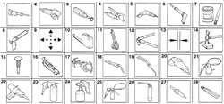
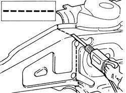
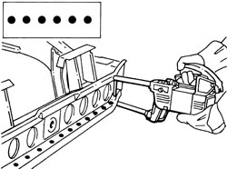
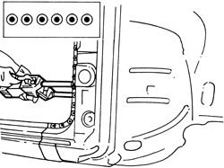
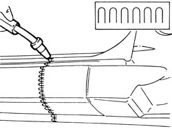
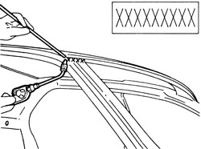
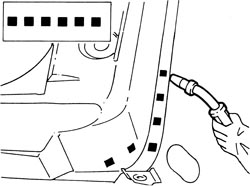
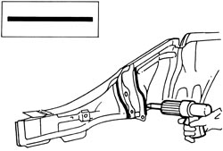

REMOVAL-REFITTING - GENERAL REMARKS
- Path
- Procedures > 72 PANELS AND FRAMES > 7210 REMOVING-REFITTING > REMOVAL-REFITTING - GENERAL REMARKS
- Kind
- repair procedure (removal / refitting; the operation number is the code)
- Applies to
- all engines; all production periods
- Interactive page
- https://sloeber94.github.io/elrnDB-fCrm/en/#/194001212
Applies to: all engines; all production periods
Symbols

1. Cutting with alternating saw
2. Cutting with circular blade saw
3. Cleaning with rotary brush
4. Removing spot welds with chamfering machine
5. Removing spot welds with drill. Drilling for MIG welding
6. Removing body panel with chisel. Drilling for MIG welding
7. Applying electro-weldable protectives
8. Applying high thickness electro-weldable protectives
9. Centering components
10. Measurement
11. Fastening components
12. Fastening threaded rivets
13. Checking alignment gaps
14. Straightening edges with hammer and dolly block
15. Removing spot welds with hammer and chisel
16. Removing treatment with power knife
17. Spot welding
18. MIG welding
19. Welding with oxy-acetylene torch
20. Grinding
21. Applying anti-oxidant protectives
22. Application of sealants
23. Application of underbody protection
24. Application of paint
25. Application of protective waxes
26. Application of foam products
27. Heating with hot air
28. Removing metal offcuts
Process symbols
Cutting with a power saw or chisel

Spot welding.

Spot welding (three panels)

MIG welding - seam - sections

Brazing

MIG fill welding

Sealing
